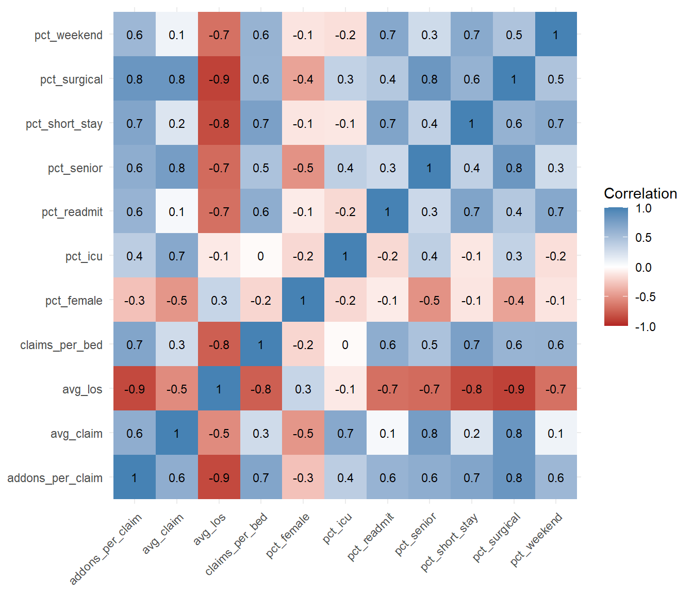
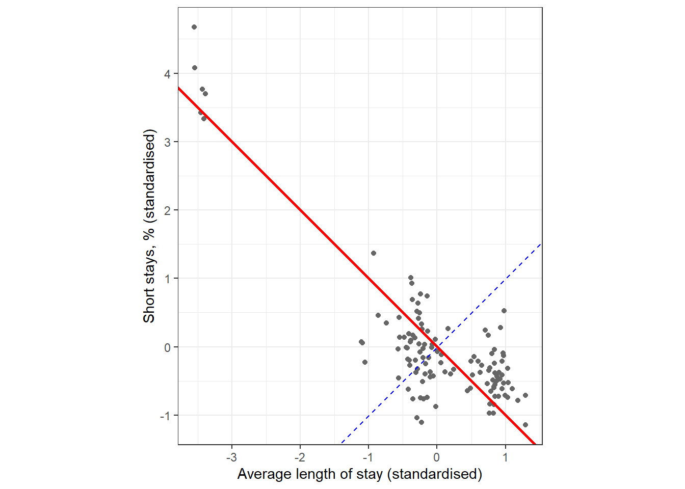
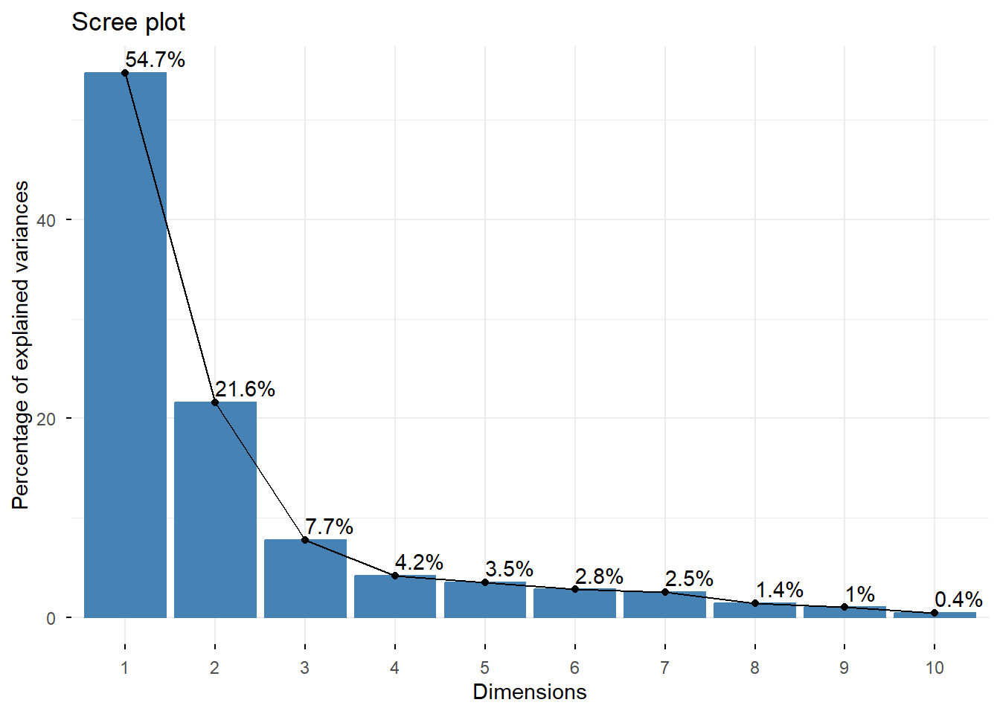
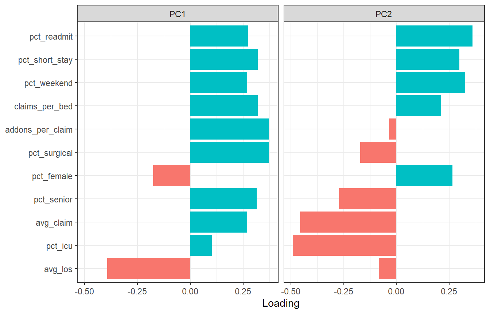
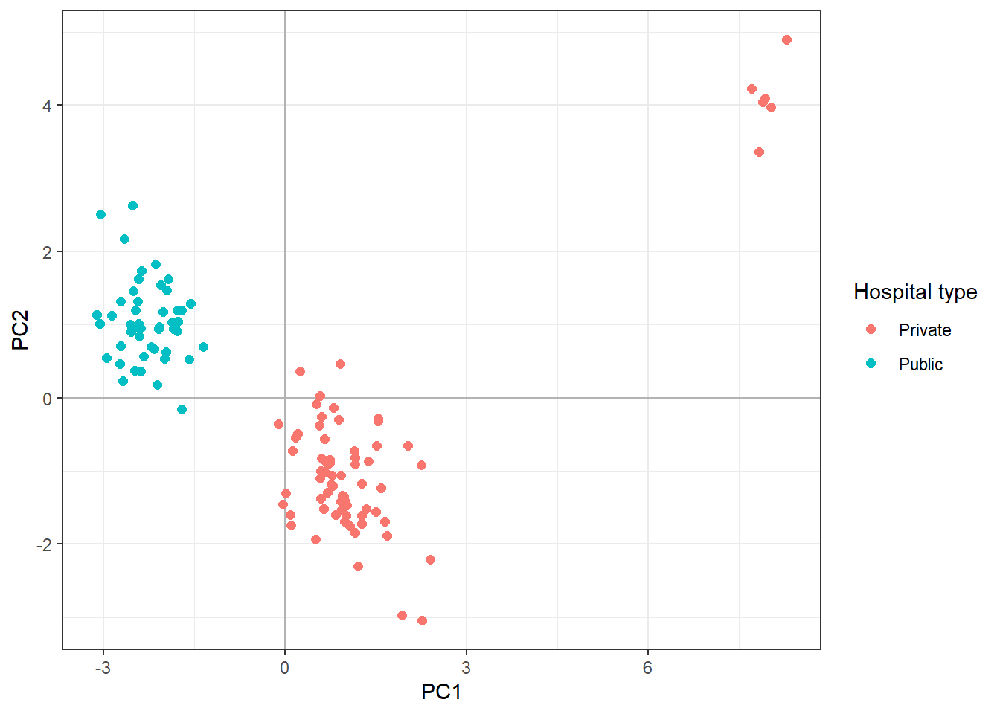
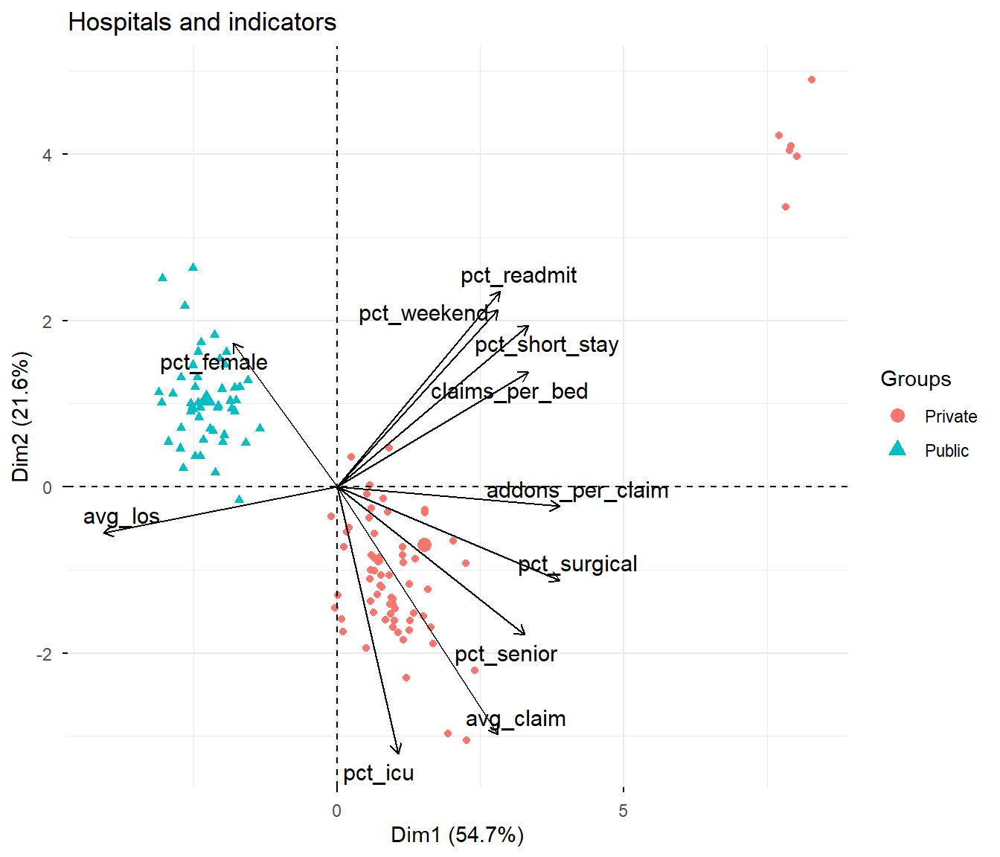

43 Principal Component Analysis
Auditors today rarely look at just one number. To judge a hospital, a school, a fair price shop or a taxpayer, we often build ten or twenty indicators. Claims per bed, average bill, length of stay, share of surgeries, and so on. Each indicator tells a part of the story. But reading twenty indicators for hundreds of units, and keeping all of them in mind at once, is very difficult.
Principal Component Analysis, or PCA, helps with exactly this problem. It takes many indicators and combines them into a few new indicators, called principal components. These few components keep most of the information of the original indicators. With just two of them, we can draw every unit as a point on a simple chart, and see at a glance which units behave alike and which ones stand apart.
A simple way to understand PCA is to think of a photograph. A building has length, breadth and height. A photograph is flat, with only two dimensions. Yet a photograph taken from the right angle shows the building quite well. PCA finds the “best angle” from which to look at our many-dimensional data, so that a flat, two-dimensional picture shows as much as possible.
43.1 Where can PCA help an auditor?
- Profiling units on many indicators. Hospitals under a health insurance scheme, schools on UDISE indicators, fair price shops under PDS, GST taxpayers, or bank branches. PCA gives one map of all units.
- Spotting unusual units. Units which lie far from the rest on this map deserve attention. This is a natural extension of the anomaly detection methods of Chapter 47.
- Risk-based selection of units for audit. A score built from the components can rank units, instead of looking at twenty separate rankings.
- Removing duplication among indicators. Many indicators measure nearly the same thing. PCA combines them, so that the same information is not counted twice. This is useful before clustering (next chapter) and before regression, where highly correlated variables cause problems, as we saw while discussing multi-collinearity in Chapter 38.
- Understanding what drives the differences. The components show which indicators move together. This often gives useful insight into how the units actually operate.
43.2 Our data, an imaginary health insurance scheme
In this chapter and the next two, we will use one common data set. It belongs to an imaginary state health insurance scheme, which we will call the Sarvajan Swasthya Yojana (SSY). Under the scheme, poor families get free treatment at empanelled hospitals. Hospitals treat the patients and then raise claims on the scheme for fixed package rates. For example, an appendectomy is paid at ₹ 25,000, and an ICU stay can be added on for ₹ 15,000.
Schemes like this are audited regularly. Typical audit concerns include hospitals admitting patients who do not need admission, discharging them too early, readmitting the same patients to claim again, billing for procedures not done, and adding costly items like ICU stays without need.
The data has three files, all made up for this book. You can download them from the Data folder of the book’s GitHub repository. The code that creates them is in tools/make_health_scheme_data.R.
-
ssy_hospitals.csvhas one row per empanelled hospital. -
ssy_packages.csvhas the list of treatment packages and their rates. -
ssy_claims.csvhas one row per claim paid during 2024-25.
Let us have a look at each.
glimpse(hospitals)Rows: 120
Columns: 5
$ hospital_id <chr> "H001", "H002", "H003", "H004", "H005", "H006", "H007", …
$ hospital_name <chr> "District Hospital Amarpur", "District Hospital Belapur"…
$ type <chr> "Public", "Public", "Public", "Public", "Public", "Publi…
$ district <chr> "Amarpur", "Belapur", "Chandpur", "Devgarh", "Fatehpur",…
$ beds <dbl> 227, 275, 266, 293, 224, 262, 243, 208, 144, 88, 81, 78,…There are 120 hospitals. 48 are public, like district hospitals and community health centres (CHCs). The other 72 are private.
packages |>
select(package_code, package_name, specialty, rate, surgical)# A tibble: 21 × 5
package_code package_name specialty rate surgical
<chr> <chr> <chr> <dbl> <lgl>
1 M01 Acute febrile illness General Medicine 9000 FALSE
2 M02 Acute gastroenteritis General Medicine 8000 FALSE
3 M03 Pneumonia General Medicine 15000 FALSE
4 M04 Dengue fever General Medicine 12000 FALSE
5 M05 Diabetic ketoacidosis General Medicine 20000 FALSE
6 S01 Appendectomy General Surgery 25000 TRUE
7 S02 Inguinal hernia repair General Surgery 22000 TRUE
8 S03 Laparoscopic cholecystectomy General Surgery 35000 TRUE
9 G01 Hysterectomy Gynaecology 30000 TRUE
10 G02 Caesarean delivery Obstetrics 12000 TRUE
# ℹ 11 more rowsCodes starting with A are add-on packages. They are billed along with a main package, never alone.
glimpse(claims)Rows: 33,476
Columns: 9
$ claim_id <chr> "CL000001", "CL000002", "CL000003", "CL000004", "CL0000…
$ hospital_id <chr> "H001", "H001", "H001", "H001", "H001", "H001", "H002",…
$ patient_id <chr> "P860201", "P518232", "P927156", "P979676", "P356882", …
$ gender <chr> "F", "F", "M", "M", "M", "F", "F", "F", "M", "M", "F", …
$ age <dbl> 13, 28, 42, 42, 72, 47, 9, 71, 59, 26, 26, 59, 49, 40, …
$ admission_date <date> 2024-04-01, 2024-04-01, 2024-04-01, 2024-04-01, 2024-0…
$ discharge_date <date> 2024-04-07, 2024-04-05, 2024-04-05, 2024-04-05, 2024-0…
$ packages <chr> "M04", "G02", "S01;A04", "M04", "M01;A01", "M02;A02", "…
$ claim_amount <dbl> 12000, 12000, 26000, 12000, 24000, 11000, 12000, 9000, …There are 33,476 claims. The packages column lists all packages billed in a claim, separated by ;. The first one is the main package and the rest are add-ons. So S03;A04 means a laparoscopic cholecystectomy with an ultrasound of the abdomen.
43.3 Building indicators for each hospital
PCA works on a table with one row per unit and one column per indicator. So we first build such a table from the claims. Let us think like an auditor and choose indicators that may reveal problems.
| Indicator | What it measures | Why it matters in audit |
|---|---|---|
claims_per_bed |
Claims in the year per bed | Too many claims for the size of the hospital |
avg_claim |
Average claim, ₹ thousand | Costly treatment, or inflated bills |
avg_los |
Average length of stay, days | Very short stays may mean unneeded admission |
pct_surgical |
Share of claims for surgery | Unneeded surgeries |
pct_icu |
Share of claims with ICU add-on | ICU billed without need |
pct_short_stay |
Share of non-day-care claims discharged within a day | Admission only to make a claim |
pct_weekend |
Share of admissions on Saturday or Sunday | Patients brought in through weekend “camps” |
pct_readmit |
Share of claims where the same patient was discharged by the same hospital within the previous 30 days | Discharging and readmitting to claim twice |
pct_female |
Share of female patients | Patient mix |
pct_senior |
Share of patients aged 60 or above | Patient mix |
addons_per_claim |
Average number of add-ons per claim | Unbundling, that is, billing separately what is included in a package |
First, we add a few helper columns to the claims.
claims_plus <- claims |>
mutate(main_package = str_extract(packages, "^[A-Z][0-9]+"),
los = as.numeric(discharge_date - admission_date),
n_addons = str_count(packages, ";")) |>
left_join(packages |> select(main_package = package_code, surgical, day_care),
by = "main_package") |>
arrange(hospital_id, patient_id, admission_date) |>
mutate(readmit = !is.na(lag(discharge_date)) &
admission_date - lag(discharge_date) <= 30,
.by = c(hospital_id, patient_id))A few points about this code.
-
str_extract(packages, "^[A-Z][0-9]+")takes out the first package code, which is the main package. -
str_count(packages, ";")counts the semicolons. A claim with two add-ons has two semicolons. - For readmissions, we sort the claims of each patient at each hospital by date. Then
lag()gives the discharge date of the previous claim of the same patient at the same hospital. If the new admission is within 30 days of that discharge, it is a readmission.
After a join, always check the number of rows. Here nrow(claims_plus) should be the same as nrow(claims). If a package code appeared twice in the package list, some claims would be counted twice, and every indicator would be wrong.
Now we summarise the claims for each hospital.
indicators <- claims_plus |>
summarise(n_claims = n(),
avg_claim = mean(claim_amount) / 1000,
avg_los = mean(los),
pct_surgical = 100 * mean(surgical),
pct_icu = 100 * mean(str_detect(packages, "A01")),
pct_short_stay = 100 * mean(los <= 1 & !day_care),
pct_weekend = 100 * mean(wday(admission_date, week_start = 1) >= 6),
pct_readmit = 100 * mean(readmit),
pct_female = 100 * mean(gender == "F"),
pct_senior = 100 * mean(age >= 60),
addons_per_claim = mean(n_addons),
.by = hospital_id) |>
left_join(hospitals, by = "hospital_id") |>
mutate(claims_per_bed = n_claims / beds)
indicators |>
select(hospital_name, type, claims_per_bed, avg_claim, avg_los, pct_icu, pct_readmit) |>
head()# A tibble: 6 × 7
hospital_name type claims_per_bed avg_claim avg_los pct_icu pct_readmit
<chr> <chr> <dbl> <dbl> <dbl> <dbl> <dbl>
1 District Hospital … Publ… 3.35 17.4 4.10 9.46 3.02
2 District Hospital … Publ… 2.77 16.9 4.14 6.30 2.62
3 District Hospital … Publ… 2.24 17.2 4.12 8.05 2.68
4 District Hospital … Publ… 3.86 17.4 4.07 7.17 3.27
5 District Hospital … Publ… 2.73 16.7 4.12 7.04 3.76
6 District Hospital … Publ… 2.17 17.7 4.20 7.92 2.46Let us keep only the eleven indicator columns in a separate object, which we will give to PCA.
43.4 Many indicators say the same thing
Before running PCA, let us see how the indicators relate to each other. The correlation matrix shows this. A correlation close to 1 means two indicators rise together. Close to -1 means one rises when the other falls. Close to 0 means no relation.
cor(X) |>
as.data.frame() |>
rownames_to_column("ind_1") |>
pivot_longer(-ind_1, names_to = "ind_2", values_to = "r") |>
ggplot(aes(ind_1, ind_2, fill = r)) +
geom_tile() +
geom_text(aes(label = round(r, 1)), size = 3) +
scale_fill_gradient2(low = "firebrick", mid = "white", high = "steelblue", limits = c(-1, 1)) +
labs(x = NULL, y = NULL, fill = "Correlation") +
theme_minimal() +
theme(axis.text.x = element_text(angle = 45, hjust = 1))
Look at Figure 43.1. Many cells are dark. For example, hospitals with more claims per bed also have more short stays, more weekend admissions and more readmissions. And they have shorter average stays. These indicators are, to a large extent, telling the same story. This is exactly the situation where PCA is useful.
43.5 The idea of PCA, with two indicators
Let us first understand PCA with just two indicators, which we can draw. Take avg_los and pct_short_stay. They are strongly related, with a correlation of -0.84.
Before anything else, we standardise both indicators. That is, we subtract the mean and divide by the standard deviation, using scale(). After this, both have mean 0 and standard deviation 1. This is important, because PCA looks at variation. An indicator measured in larger units would otherwise dominate merely because of its units.
two <- X |>
select(avg_los, pct_short_stay) |>
scale() |>
as.data.frame()
pca_two <- prcomp(two)
slope <- pca_two$rotation[2, 1] / pca_two$rotation[1, 1]
ggplot(two, aes(avg_los, pct_short_stay)) +
geom_point(colour = "grey40") +
geom_abline(slope = slope, intercept = 0, colour = "red", linewidth = 1) +
geom_abline(slope = -1 / slope, intercept = 0, colour = "blue", linetype = "dashed") +
coord_equal() +
labs(x = "Average length of stay (standardised)",
y = "Short stays, % (standardised)") +
theme_bw()
The points in Figure 43.2 run broadly from the top left to the bottom right. Hospitals with longer stays have fewer short stays, as we would expect. (The few points at the far top left are hospitals with very short stays. We will meet them again soon.) The red line runs along this general direction. This is the direction in which the hospitals differ the most. It is the first principal component (PC1). The blue dashed line is at right angles to it, across the cloud. This is the second principal component (PC2). Hospitals differ only a little in this direction.
So instead of two indicators, we can describe each hospital by its position along the red line, and lose very little. Let us check how much of the total variation each component captures.
summary(pca_two)Importance of components:
PC1 PC2
Standard deviation 1.3562 0.40077
Proportion of Variance 0.9197 0.08031
Cumulative Proportion 0.9197 1.00000The first component alone captures 92% of the variation in the two indicators. That is the essence of PCA. When indicators move together, a few components can carry most of their information.
With eleven indicators, we cannot draw the picture. But PCA does exactly the same thing in eleven dimensions. It finds the direction of largest variation (PC1). Then, at right angles to it, the next largest (PC2), and so on.
43.6 Running PCA on all indicators
In R, PCA is done with the function prcomp() from base R. The argument scale. = TRUE standardises every indicator before the analysis.
hosp_pca <- prcomp(X, scale. = TRUE)Our indicators are on very different scales. avg_claim is in thousands of rupees, addons_per_claim is a small fraction, and percentages run from 0 to 100. Without scale. = TRUE, the indicator with the largest numbers would dominate the result, simply because of its units. Unless all indicators are in the same unit and you have a good reason, always scale.
The result has three parts that we need.
-
sdevgives the standard deviation of each component. Its square tells how much variation the component carries. -
rotationgives the loadings. These are the weights of each indicator in each component. -
xgives the scores. These are the values of each component for each hospital.
43.7 How many components to keep?
There are as many components as indicators, eleven here. But the first few carry most of the information. summary() shows how much.
summary(hosp_pca)Importance of components:
PC1 PC2 PC3 PC4 PC5 PC6 PC7
Standard deviation 2.4534 1.5424 0.9221 0.67578 0.61716 0.55340 0.52871
Proportion of Variance 0.5472 0.2163 0.0773 0.04152 0.03463 0.02784 0.02541
Cumulative Proportion 0.5472 0.7635 0.8408 0.88228 0.91690 0.94474 0.97016
PC8 PC9 PC10 PC11
Standard deviation 0.39076 0.32963 0.21515 0.14368
Proportion of Variance 0.01388 0.00988 0.00421 0.00188
Cumulative Proportion 0.98404 0.99392 0.99812 1.00000The row Proportion of Variance shows the share of each component. The row Cumulative Proportion adds them up. The first two components together carry 76% of all the variation in eleven indicators. The first three carry 84%.
A scree plot shows the same thing as a chart (Figure 43.3). The function fviz_eig() from the package factoextra draws it.
library(factoextra)
fviz_eig(hosp_pca, addlabels = TRUE)
There are three common ways to decide how many components to keep.
- The elbow. Look for the point where the scree plot bends and flattens out. Components after the bend add little.
- Cumulative share. Keep enough components to cover around 70% to 80% of the variation.
- Eigenvalue above 1. The eigenvalue of a component is the square of its standard deviation. Keep components with eigenvalue above 1, because such a component carries more information than a single original indicator.
Let us check the eigenvalues.
round(hosp_pca$sdev^2, 2) [1] 6.02 2.38 0.85 0.46 0.38 0.31 0.28 0.15 0.11 0.05 0.02In our data, all three rules point in the same direction. Two components carry most of the information, and only the first two have eigenvalues above 1. We will work mainly with the first two.
43.8 What do the components mean?
A component is a weighted combination of the original indicators. The weights are the loadings. To understand what a component stands for, we look at which indicators have large loadings, positive or negative.
round(hosp_pca$rotation[, 1:3], 2) PC1 PC2 PC3
claims_per_bed 0.32 0.21 -0.04
avg_claim 0.27 -0.46 -0.06
avg_los -0.39 -0.08 0.00
pct_surgical 0.37 -0.17 -0.01
pct_icu 0.10 -0.49 -0.50
pct_short_stay 0.32 0.30 -0.08
pct_weekend 0.27 0.33 0.04
pct_readmit 0.27 0.36 0.00
pct_female -0.17 0.26 -0.80
pct_senior 0.32 -0.27 0.18
addons_per_claim 0.37 -0.04 -0.25It is easier to see this in a chart (Figure 43.4).
hosp_pca$rotation[, 1:2] |>
as.data.frame() |>
rownames_to_column("indicator") |>
pivot_longer(-indicator, names_to = "component", values_to = "loading") |>
ggplot(aes(loading, fct_reorder(indicator, loading), fill = loading > 0)) +
geom_col(show.legend = FALSE) +
facet_wrap(~component) +
labs(x = "Loading", y = NULL) +
theme_bw()
Let us read the two components.
- PC1, the “throughput” component. It is high for hospitals with many claims per bed, more surgeries, more short stays, more add-ons, more weekend admissions and more readmissions. It is low for hospitals with long average stays. So a high PC1 means a hospital that pushes a lot of patients through quickly, mostly for surgery.
- PC2, “costly care” versus “quick churn”. Its large negative loadings are for ICU share, average claim and senior patients. Its positive loadings are for readmissions, weekend admissions, short stays and female patients. So a low PC2 means expensive care, with many ICU stays. A high PC2 means quick, repeated, low-cost turnover.
PCA decides the direction of a component, but not which end is “positive”. Another software, or even another version of R, may give the same component with all signs reversed. The meaning does not change. Only the reading flips. So always interpret a component from its loadings, and never assume that a high score is “good” or “bad” without checking.
43.9 The map of hospitals
Now comes the most useful part. The scores give the position of every hospital on each component. Plotting PC1 against PC2 draws a map of all 120 hospitals, built from all eleven indicators.
scores <- indicators |>
select(hospital_id, hospital_name, type) |>
bind_cols(as_tibble(hosp_pca$x[, 1:3]))
ggplot(scores, aes(PC1, PC2, colour = type)) +
geom_hline(yintercept = 0, colour = "grey70") +
geom_vline(xintercept = 0, colour = "grey70") +
geom_point(size = 2) +
labs(colour = "Hospital type") +
theme_bw()
Several things are visible at once in Figure 43.5.
- Public hospitals sit mostly on the left, with lower throughput and longer stays. Private hospitals spread to the right. This is the normal, expected difference between the two.
- A small group of private hospitals sits far to the right and up. Very high throughput, with quick churn. These are worth a close look.
- Two private hospitals sit at the very bottom of the private group. Costly care, with many ICU stays. They are less dramatic than the group on the right, but still unusual.
Without PCA, we would have had to look at eleven separate rankings to see this.
43.9.1 A biplot
A biplot shows the hospitals and the indicators on the same chart. Each indicator is drawn as an arrow. The arrow points in the direction in which that indicator increases. Hospitals lying in the direction of an arrow have high values of that indicator. fviz_pca_biplot() from factoextra draws it (Figure 43.6).
fviz_pca_biplot(hosp_pca,
geom.ind = "point",
habillage = factor(indicators$type),
col.var = "black",
repel = TRUE,
title = "Hospitals and indicators")
Now we can see why the unusual hospitals are unusual. The group on the right lies in the direction of the arrows for claims per bed, short stays, weekend admissions and readmissions. The pair at the bottom lies in the direction of ICU share and average claim.
43.10 Audit use case 1, ranking hospitals for audit
The map shows the unusual hospitals visually. For an audit plan, we need a ranked list. A simple measure is the distance of each hospital from the centre of the map. The centre represents an average hospital. A hospital far from it is unusual in some combination of indicators.
We use the first three components, which together carry 84% of the variation. The distance is the square root of the sum of squared scores, the usual straight-line distance.
# A tibble: 10 × 7
hospital_id hospital_name type PC1 PC2 PC3 distance
<chr> <chr> <chr> <dbl> <dbl> <dbl> <dbl>
1 H116 Arpan Hospital Private 8.29 4.9 -0.6 9.64
2 H070 Prerna Hospital Private 8.03 3.98 -0.35 8.97
3 H066 Suraksha Nursing Home Private 7.93 4.1 0 8.92
4 H071 Ganga Nursing Home Private 7.9 4.04 -0.13 8.87
5 H063 Kamdhenu Nursing Home Private 7.71 4.22 -0.86 8.83
6 H098 Madhuban Medical Centre Private 7.83 3.36 0.35 8.53
7 H085 Pragati Nursing Home Private 2.27 -3.05 -2.66 4.64
8 H104 Navjeevan Hospital Private 1.93 -2.97 -2.88 4.56
9 H038 CHC Gopalganj-5 Public -3.05 2.5 -1.7 4.3
10 H026 CHC Devgarh-3 Public -2.52 2.63 -0.98 3.77The top of this list is a clear set of private hospitals, well separated from the rest. Let us look at their actual indicators, alongside the median of all hospitals for comparison.
top_ids <- scores |>
slice_max(distance, n = 8) |>
pull(hospital_id)
bind_rows(
indicators |> filter(hospital_id %in% top_ids),
indicators |>
summarise(across(where(is.numeric), median)) |>
mutate(hospital_name = "Median of all hospitals")
) |>
select(hospital_name, claims_per_bed, avg_los, pct_short_stay, pct_weekend,
pct_readmit, pct_icu, avg_claim, addons_per_claim) |>
arrange(desc(claims_per_bed)) |>
knitr::kable(digits = 1)| hospital_name | claims_per_bed | avg_los | pct_short_stay | pct_weekend | pct_readmit | pct_icu | avg_claim | addons_per_claim |
|---|---|---|---|---|---|---|---|---|
| Madhuban Medical Centre | 8.5 | 1.5 | 22.3 | 28.7 | 9.8 | 5.3 | 27.0 | 0.6 |
| Kamdhenu Nursing Home | 8.2 | 1.4 | 23.9 | 34.8 | 9.3 | 6.8 | 25.5 | 0.6 |
| Arpan Hospital | 7.9 | 1.4 | 26.4 | 36.2 | 11.5 | 6.3 | 25.5 | 0.6 |
| Suraksha Nursing Home | 7.9 | 1.5 | 20.7 | 35.7 | 11.7 | 6.3 | 25.9 | 0.6 |
| Prerna Hospital | 7.9 | 1.5 | 22.5 | 36.6 | 10.6 | 7.8 | 26.4 | 0.6 |
| Ganga Nursing Home | 7.4 | 1.5 | 21.1 | 36.1 | 10.5 | 4.5 | 26.6 | 0.6 |
| Pragati Nursing Home | 4.7 | 3.7 | 5.9 | 19.7 | 4.3 | 28.8 | 34.4 | 0.5 |
| Navjeevan Hospital | 3.6 | 3.3 | 4.4 | 21.2 | 3.6 | 27.7 | 35.0 | 0.5 |
| Median of all hospitals | 3.4 | 3.6 | 5.4 | 20.0 | 3.2 | 9.8 | 27.2 | 0.3 |
knitr::kable() prints a data frame as a neat table, with all columns visible. The argument digits = 1 rounds the numbers to one decimal place.
Now each hospital can be described in plain words in an audit plan. Six hospitals have more than twice the usual claims per bed, less than half the usual length of stay, about four times the usual share of short stays, many more weekend admissions, about three times the usual readmissions, and twice the add-ons per claim. Two hospitals bill an ICU stay in nearly three times the usual share of claims, and so have a noticeably higher average claim. These are exactly the kind of leads an auditor would want to examine first.
This ranking is a good basis for risk-based selection of units for audit. Instead of selecting hospitals at random or by size alone, select the top few by distance, along with a random sample of the rest. The random sample protects against the risk of missing problems that the indicators do not capture.
43.11 Audit use case 2, a composite index
Sometimes management or audit wants a single index to rank units, for example a “throughput risk index”. Since PC1 combines many indicators with weights decided by the data, it can serve as such an index.
# A tibble: 8 × 3
hospital_name type PC1
<chr> <chr> <dbl>
1 Arpan Hospital Private 8.29
2 Prerna Hospital Private 8.03
3 Suraksha Nursing Home Private 7.93
4 Ganga Nursing Home Private 7.90
5 Madhuban Medical Centre Private 7.83
6 Kamdhenu Nursing Home Private 7.71
7 Om Sai Multispeciality Hospital Private 2.40
8 Pragati Nursing Home Private 2.27But use such an index with care. Remember that the sign of a component is arbitrary. Also, PC1 is the direction of largest variation, which is not always the direction of highest risk. In our data, PC1 also separates public from private hospitals, a difference which is perfectly normal. An index for risk should be checked against the loadings, and against audit judgement.
43.12 Audit use case 3, preparing for clustering and regression
When indicators are highly correlated, methods like clustering and regression can be misled. In clustering, a group of correlated indicators gets counted several times over. In regression, correlated predictors make the estimates unstable, as we saw with multi-collinearity in Chapter 38.
The principal components are, by design, not correlated with each other. Let us verify this.
All the off-diagonal correlations are zero. So using the first few components, instead of the original indicators, removes the duplication. We will use this idea in the next chapter, where we will group the hospitals into clusters.
43.13 Things to keep in mind
- PCA works only on numeric data. Categorical columns, like the type of hospital, cannot go in directly. We used the type only to colour the chart.
- Extreme units pull the components towards themselves. In our data, a few unusual hospitals strongly shape PC1. This is useful for spotting them. But if your aim is to understand the normal structure, run PCA once more after setting aside the extreme units.
- PCA finds variation, not wrongdoing. A unit far from the centre is different. Whether it is wrong can only be decided from records.
- Components can be hard to name. Not every component has a neat meaning. Do not force one. Use the loadings and the biplot to describe what you see.
43.14 A suggested workflow
- Decide the unit and the indicators. Choose indicators that relate to the audit questions. Build them carefully from transaction data.
- Look at the correlations. If indicators are not correlated at all, PCA will not reduce much.
- Run
prcomp()withscale. = TRUE. - Decide how many components to keep, using the scree plot, cumulative share and eigenvalues.
- Interpret the components from their loadings. Give them simple names if they have a clear meaning.
- Draw the map and the biplot. Look for groups and for units standing apart.
- Rank units by distance from the centre, and go back to the original indicators to describe each in plain words.
- Verify with records before drawing any conclusion.
PCA is a way of looking at data. It turns many numbers into a picture that the human eye can read. It does not, by itself, prove anything. Its value in audit is in pointing to the units, and the indicators, that deserve a closer look.
43.15 Summary of functions used
| Function | Package | What it does |
|---|---|---|
read_csv() |
readr | Reads the data files |
str_extract(), str_count()
|
stringr | Takes out the main package, counts add-ons |
lag() with .by
|
dplyr | Previous claim of the same patient, for readmissions |
cor() |
stats | Correlation matrix of indicators |
scale() |
base R | Standardises indicators to mean 0 and standard deviation 1 |
prcomp(scale. = TRUE) |
stats | Principal component analysis |
summary() of a prcomp object |
stats | Share and cumulative share of variation |
$rotation, $x, $sdev
|
stats | Loadings, scores and standard deviations of components |
fviz_eig() |
factoextra | Scree plot |
fviz_pca_biplot() |
factoextra | Units and indicators on one chart |